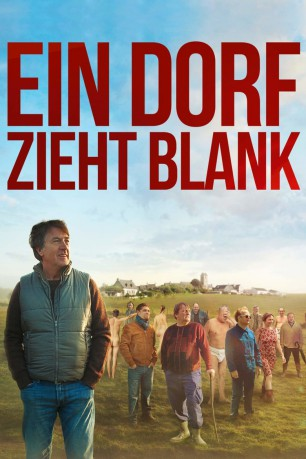

#10220 Ein Dorf zieht blank
 gesehen am 07.01.2019
gesehen am 07.01.2019
 
 IMDB-Wertung: 5.8 / 10
IMDB-Wertung: 5.8 / 10  Metascore: 0
Metascore: 0 
Bürgermeister Georges Balbuzard ist mit seinem Latein am Ende. Die Landwirtschaftskrise hat auch die Bauern in seinem beschaulichen Dorf Mêle-sur-Sarthe in der Normandie erreicht. Doch ihre zahlreichen Proteste erwecken weder das Interesse der Verantwortlichen in Rouen noch in Paris. Also beschließt Balbuzard die Sache selbst in die Hand zu nehmen. Er weiß nur noch nicht so recht wie. Als zufällig der berühmte Fotokünstler Blake Newman nach Mêle-sur-Sarthe kommt, scheinen alle Probleme gelöst und die nötige Aufmerksamkeit garantiert. Denn Newman möchte ausgerechnet hier sein neues spektakuläres Fotoprojekt realisieren und sogar die Bauern miteinbeziehen. Wäre da nicht noch eine Kleinigkeit, von der Bürgermeister Balbuzard noch alle überzeugen muss: Die Bauern sollen sich für das Foto ausziehen!
Jahr: 2018
Dauer: 110 Minuten
FSK: 6
Land: Frankreich Studio: Concorde FilmverleihTonspuren: DTS - ,
Untertitel: Deutsch,
Auflösung: 1080p (1920x1040) Größe: 7782 MB
Genre: Drama, Komödie
Regisseur: Philippe Le Guay
Drehbuch: Victoria Bedos, Olivier Dazat, Olivier Dazat, Philippe Le Guay, Philippe Le Guay
Soundtrack: Bruno Coulais
Darsteller:
 François Cluzet als Georges Balbuzard
François Cluzet als Georges Balbuzard François-Xavier Demaison als Thierry Levasseur
François-Xavier Demaison als Thierry Levasseur- Julie-Anne Roth als Valérie Levasseur
 Toby Jones als Newman
Toby Jones als Newman Vincent Regan als Bradley
Vincent Regan als Bradley Colin Bates als Ross
Colin Bates als Ross Arthur Dupont als Vincent Jousselin
Arthur Dupont als Vincent Jousselin Grégory Gadebois als Roger
Grégory Gadebois als Roger- Philippe Pollet-Villard als Le campeur
- Carlos Fernandes als
- Isabelle Katz Liza Pivert als A passenger (uncredited)
- Pili Groyne als Chloé Levasseur
- Daphné Dumons als Charlotte
- Lucrèce Carmignac als Aurélie
- Philippe Rebbot als Eugène
- Patrick d'Assumçao als Maurice
- Samuel Churin als Bezon
- Lucie Muratet als Gisèle
- Delphine Zingg als Michèle
- Brigitte Chamarande als Josy
- Marie-Christine Orry als Lenny
- Philippe Duquesne als Férol, le pharmacien
- Gérard Watkins als Volker
- Jérôme Chappatte als Le médecin OMS
- Jean-Claude Bolle-Reddat als Le directeur OMS
- Didier Roguet als Didier
- Sébastien Coeuret als Lesourd
- Roland Haslwanter als Péchon
- Thierry Colette als Lefranc
- Christian Goré als Gournay
- Stéphanie Dordoigne als Lucie
- Michel Roullé als Michel
- Samuel Biderre als Lecoeur
- Nathalie Bidault als Stéphanie
- Aurélie Suzanne als Marion
- Lola Guillain-Lessieu als Martine
- Clothilde Auffret als Mme de Quincy
- Stéphanie Chenet als Mme Leclerc
- Odile Grandchamps als Mme Leguen
- Cécile Lenormand als Mme Lemoulin
- Laurent Duval als Lacoudre
Datei: X:\2018(A-F)\Dorf zieht blank, Ein (2018, FSK6, 1920x1040).mkv seit 25.12.2018
Festplatte: HD 2017(A-Z)-2018(A-F)
 Es gibt insgesamt 151 Filme in der Gruppe '2018(A-F)'
Es gibt insgesamt 151 Filme in der Gruppe '2018(A-F)'